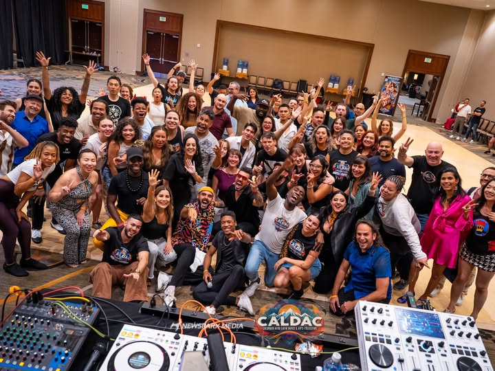
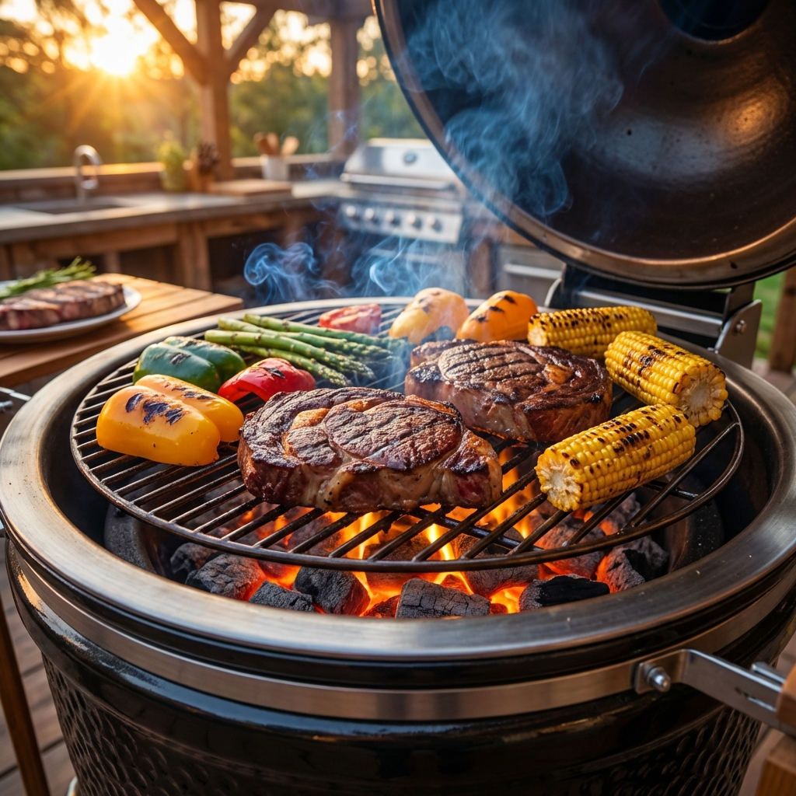

Life Beyond Science
Exploring the world through movement, outdoor adventure, and culinary arts.
Snowboarding
There's nothing quite like the feeling of carving through fresh powder on a crisp winter morning. Snowboarding is my primary winter passion, offering a perfect blend of physical challenge and serene mountain landscapes.

Bachata & Salsa Dancing
Dance is where I find my flow. I enjoy the rhythm and connection of Latin dances, specifically Bachata and Salsa. It's a vibrant way to disconnect from the analytical world and embrace the music.

Cooking & BBQ
From the precise chemistry of a complex recipe to the primal art of a slow-smoked BBQ, I love the culinary world. Grilling for friends and family is my favorite way to spend a summer evening.